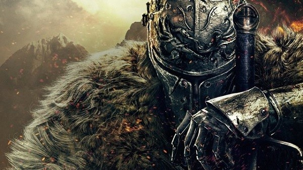
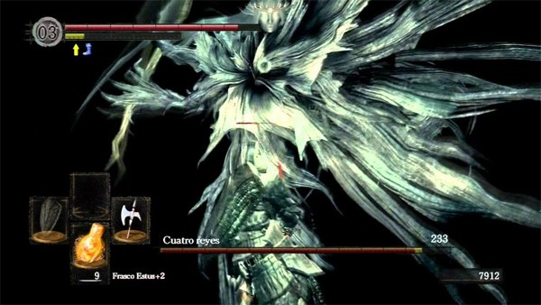
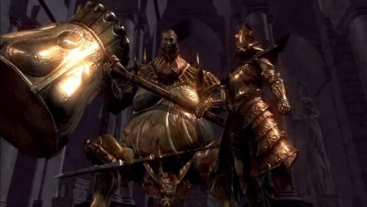
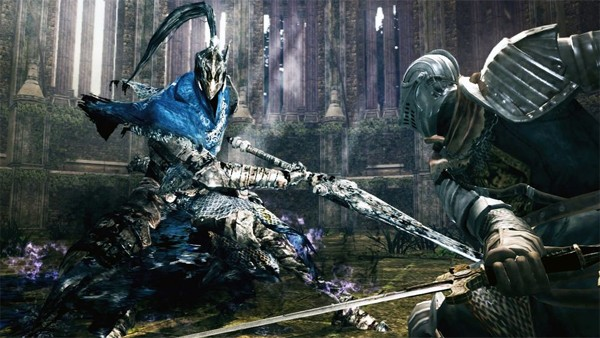
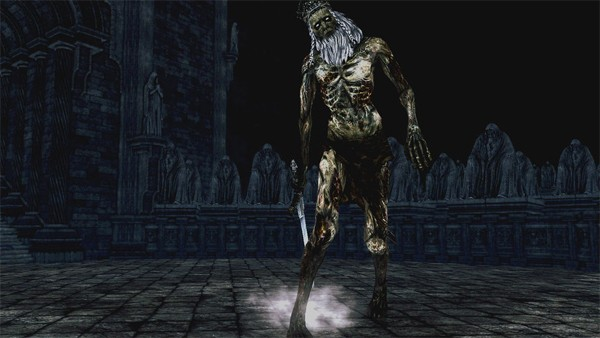
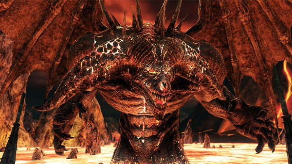
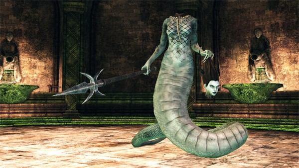
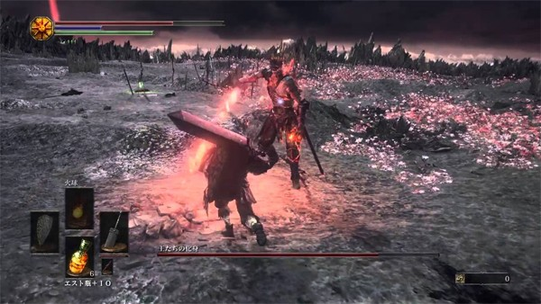
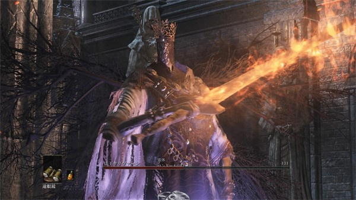
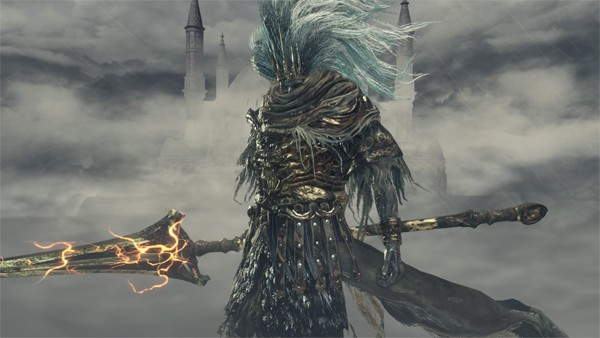

Dark Souls: Estos son los jefes más difíciles de la trilogía
¿Es alguno de estos uno de los jefes que más se te ha resistido en la serie Dark Souls?
Dark Souls es uno de los juegos de la actulidad más difíciles, su nivel de exigencia hace que sea vital no perder la concentración ni por un segundo y más aún en los enfrentamientos contra los jefes. Pero además una de las cosas más importantes a la hora de jugar a cualquier Souls es que en ningún momento hay que precipitarse o dar un paso en falso, ya que eso solo puede acabar en muerte segura.
Hemos recopilado algunos de los jefes de Dark Souls, Dark Souls II y Dark Souls III, los que a priori son más difíciles, ¿estás de acuerdo con la lista? ¿cuáles fueron los que más te costaron?
Los cuatro reyes
Jefe "Los cuatro reyes" del videojuego Dark Souls localizado en "El Abismo"
Los que han jugado la partida plus (NG +) estarán de acuerdo que se trata de uno de los jefes más difíciles del juego y si lugar a dudas uno de los que más llega a desesperar.
Ornstein y Smough
"Ornstein, el asesino de dragones y Smough, el Verdugo" dos jefes que luchan juntos en el videojuego DarkSoups
No solo hay que combatir contra ambos a la misma vez, cuando conseguimos acabar con uno el que queda vivo absorbe la energía de su compañero por lo que se hace más fuerte de lo que ya era.
Caballero Artorias
"Caballero Artorias" jefe exclusivo del DLC "Artorias del Abismo"
El DLC Artorias del Abismo es el contenido adicional que ofrece este Jefe, y como su propio nombre indica él es el enemigo más fuerte del mismo.
Rey Vendrick
"Rey Vendrick" jefe opcional de DarkSouls II
Un jefe con una gran defensa, por lo que el combate contra él a priori es bastante largo. A pesar de estar enfocado a la defensa no hay que perder ni un momento la concentración, algo fácil en un enfrentamiento largo, ya que de lo contrario puede acabar rápido con nosotros.
Viejo rey de hierro
"Viejo rey de hierro", jefe final de la zona que habita y poseedor de una de las grandes cuatro almas
Los golpes de este enemigo son muy poderosos, pero no es el único peligro que encontramos en el combate contra él, la laba que hay rodeando la escena también nos puede jugar una mala pasada.
Mytha la Reina Funesta
"Mytha la reina funesta" que cayó en la locura y acabó deformándose a sí misma al intentar ser más bella
Una jefa bastante difícil de vencer, aunque al cortar su cola las cosas se empiezan a poner algo más fáciles. Eso sí, el veneno en este enfrentamiento nos da muchos problemas.
Alma de Cenizas
"Alma de Cenizas", jefe final del videojuego DarkSouls III
Al restar vida al jefe este va rotando su arsenal y a cada arma que saca también cambia sus movimientos. Es muy importante tener estudiados cada uno de sus patrones para poder hacerle frente con astucia.
Pontífice Sulyvhan
El "Pontífice Sulyvhan" es un jefe de Dark Souls III situado en la catedral de Irithyll
Uno de los combates favoritos de Dark Souls III para muchos, a la par que difícil. Al quitarle vida invoca a un doble que nos pone las cosas aún más chungas.
Rey sin nombre
"Rey sin nombre" es un jefe opcional de Dark Souls III que comienza la lucha montado sobre un dragón
Es un jefe opcional, pero bastante molesto de derrotar. Además comienza el combate montado en su dragón, el cual también nos ataca, por lo que nuestro primer cometido es acabar con su molesto compañero.